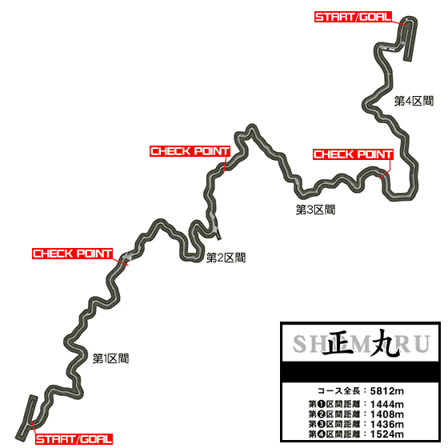
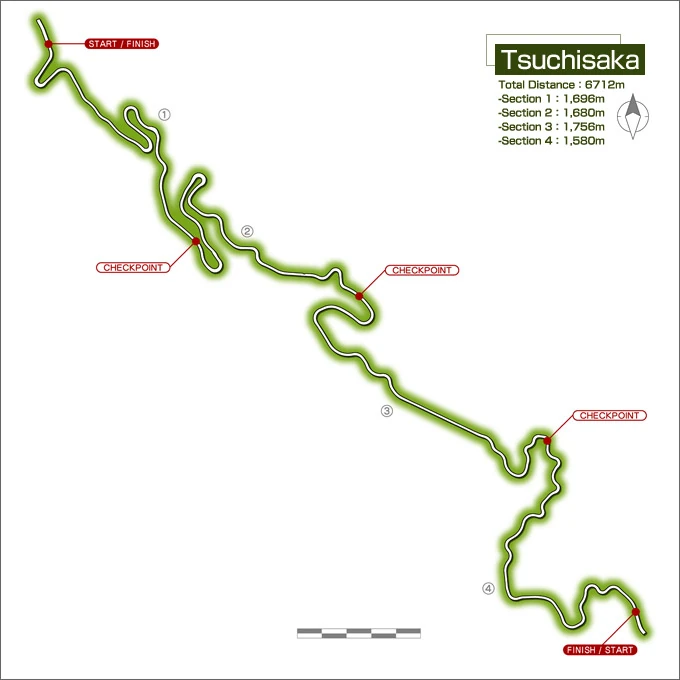

Saitama
Saitama might seem like a quiet neighbor to Tokyo, but for those who know the roads, it’s a region that pulses with hidden energy. While the cities like Saitama City and Kawaguchi hum with modern life, the true thrill lies in the mountains and winding roads that carve through the prefecture. These roads are where drivers test their limits, pushing their machines to the edge, carving through turns with precision, feeling the rush of the engine as the curves come at them fast.
The highways are wide and open, the perfect place to open up the throttle, but it’s the mountain passes—like the notorious Shomaru—that really draw those looking for a challenge. These roads are tight, with sharp corners and steep inclines that separate the skilled from the rest. Drivers don’t just race against each other—they race against the road itself, where every turn demands focus, and every straightaway is an opportunity to prove their control.
But Saitama isn’t all about speed. The prefecture’s landscape offers a balance of rugged beauty and quiet tranquility. The forests and hills in the north hide some of the most scenic routes, offering moments of calm before the next adrenaline surge. There’s a unique rhythm to the area, where nature and machines coexist—where the roar of an engine is only rivaled by the sounds of the wind through the trees or the river flowing beneath a bridge.
The culture here thrives on competition, whether it’s a local showdown between drivers or a festival in one of its historic towns, like Kawagoe. But underneath it all, there’s a quiet pride—a respect for the road and for the challenges it offers. Saitama’s roads are more than just a backdrop—they’re a proving ground, where only those who understand the true art of driving can conquer the most difficult paths, making every run a new chapter in the journey
Shomaru Pass
Shomaru Pass (正丸峠 Shomaru tōge) is a mountain pass located in Hanno, Saitama, south of Sadamine. The home course of Wataru Akiyama. It is perhaps well known for the Okumura Teahouse (奥村茶屋 Okumura Chaya), a hotspot for the local racers.
Shomaru Pass, nestled in the mountains of Saitama, is a winding, narrow road that demands the attention of any driver brave enough to tackle it. The route is filled with sharp hairpin turns, steep inclines, and unpredictable stretches, making it a true test of driving skill. The road surface can be slick, especially after rain, and the curves come quickly, leaving little room for error.
What makes Shomaru Pass so challenging isn’t just the difficulty of its turns but the mental focus it requires. It’s not about sheer speed—drivers must master the art of balance, control, and anticipation. A slight miscalculation in braking or throttle can quickly lead to trouble, especially on the narrow, twisty sections. For those who can navigate its curves with precision, however, the sense of accomplishment is immense. Shomaru Pass is a place where drivers can push their limits and truly test their skills, and it has earned its place as a rite of passage for those looking to prove themselves behind the wheel.
Sadamine Pass

Sadamine Pass (定峰峠 Sadamine Touge) is first home course of the Northern Saitama Alliance, It is located east of Chichibu, Saitama, north of Shomaru and east of Tsuchisaka. The higher elevation portion of the pass is actually the Shiroishi Pass Oku-Musashi Green Line, which then connects to the actual Sadamine Pass.
Important Battles
Racers |
Cars |
Specialization |
|---|---|---|
Takumi Fujiwara vs Nobuhiko Akiyama |
AE86 vs SXE10 |
Downhill |
Keisuke Takahashi vs Kyoko Iwase |
FD3S vs FD3S |
Uphill/Downhill |
Extra information
Sadamine Pass, tucked in the rugged mountains of Saitama Prefecture, is a road that commands the respect of any driver who dares to take it on. Known for its sharp, unforgiving turns and steep gradients, it’s not a place for the casual driver. The road is narrow, winding through thick forests with limited visibility, and every corner feels like it could be the one that trips you up. Whether you’re taking it fast or slow, the pass requires total focus and control—one wrong move and the consequences can be immediate.
The pass rises sharply, forcing drivers to adjust their speed and technique constantly. Tight hairpins and blind curves make it feel like the road is always shifting beneath you, testing your ability to predict the next move. There’s a certain satisfaction that comes from mastering the rhythm of Sadamine—knowing when to brake, when to accelerate, and how to navigate the curves with perfect precision. But the pass doesn’t forgive mistakes. The slopes are steep, and the road surface can be slippery in the rain, adding an extra layer of challenge for those who try to push the limits of their machines.
What makes Sadamine Pass special, though, is the way it makes drivers feel alive. It’s not just about getting from point A to point B—it’s about conquering the road, feeling the power of the engine underfoot as you fight gravity and fight the turns. And once you’ve conquered Sadamine, there’s a quiet sense of pride that comes with it. You’ve proven that you can master one of the toughest, most challenging mountain passes around—a road that, for many, represents the pinnacle of driving skill.
For those who truly know it, Sadamine Pass is more than just a road. It’s a challenge, a proving ground, and a place where only the most focused and skilled drivers can thrive.
Maze Pass

Maze Pass (間瀬峠) is second home course of Northern Saitama Alliance. It is located North of Sadamine and East of Tsuchisaka on the mountain of Fudoyama (不動山). Similar to Shomaru, Maze Pass is narrow with many consecutive corners, in addition the course also seem to suffer from mudslides. This also takes place between the battle of Takumi using the blind attack against Sakamoto and Keisuke passing Wataru after he spins out on his tires touching the metal gutter.
Important Battles
Racers |
Cars |
Specialization |
|---|---|---|
Takumi Fujiwara vs Sakamoto |
AE86 vs EA11R |
Downhill |
Keisuke Takahashi bs Wataru Akiyama |
FD3S vs AE86 Levin |
Uphill |
Extra information
Maze Pass is one of those roads that quickly earns its place in the hearts of drivers who crave a real test of skill. Located in the hilly terrain of Saitama Prefecture, it’s a winding, narrow mountain route that seems to constantly surprise you, with hairpin turns and sudden dips that can throw even the most experienced driver off balance. The road lives up to its name—like a maze, it curves, twists, and loops back on itself, demanding quick reflexes and a sharp mind to navigate.
The pass is particularly notorious for its narrow lanes, tight corners, and unpredictable surfaces. In some places, the road is barely wide enough for two cars to pass each other, forcing drivers to stay alert at all times, watching for any incoming traffic or obstacles. The gradient is steep, and the road itself often becomes slick after rain, making the challenge even more intense. It’s the kind of road where every corner feels like a new puzzle, requiring split-second decisions and perfect throttle control.
For those who are familiar with Maze Pass, it’s more than just a road to drive—it’s an opportunity to push the limits of both car and driver. The road’s tight twists and constant elevation changes test every aspect of a vehicle’s handling, demanding precision in braking, steering, and throttle application. The sound of the engine echoing off the hills, the feeling of the tires gripping the pavement, and the rush of the wind as you approach the next curve—every moment on Maze Pass is charged with the kind of excitement that makes driving feel alive.
But like any challenging mountain pass, Maze Pass isn’t just about raw speed. It’s about mastering the rhythm of the road, knowing how to attack each corner with precision and how to recover from any mistakes. The more you drive it, the more you learn its subtleties, building a connection with the road that few places can offer. When you conquer Maze Pass, it’s not just about finishing the route; it’s about owning every twist and turn, and leaving with the satisfaction of knowing you’ve conquered a true driver’s challenge.
Tsuchisaka
Tsuchisaka (土坂) is the Saitama Lan Evo Duo's home course. It is located far west of Sadamine; and far northwest of Shomaru, Hanno; stretching between Kanna and Nishi Chichibu of the Gunma and Saitama prefectures.
This course is perhaps famous for the oil spill, courtesy of the Saitama Lan Evo Team, at the start of Outbound Section 2 and near the end of Inbound Section 3.
The Evo V driver, Aikawa, attempted the same tactic to lure Keisuke into the oil spill early, but to no avail as Keisuke barely missed the slick while the Evo V's engine started to stall before the race could finish because of a barricade narrowing the road later in the race.
This also became Ichijo's tactic to defeat Takumi: Disable the 86 by making it slip and crash. It would also prove to be his undoing as Takumi used the oil spill to his advantage as passed the Evo VI in a matter of seconds.
Important Battles
Racers |
Cars |
Specialization |
|---|---|---|
Takumi Fujiwara vs Ichijo |
AE86 vs CP9A TM |
Downhill |
Keisuke Takahashi bs Aikawa |
FD3S vs CP9A |
Uphill |
MAIN MENU